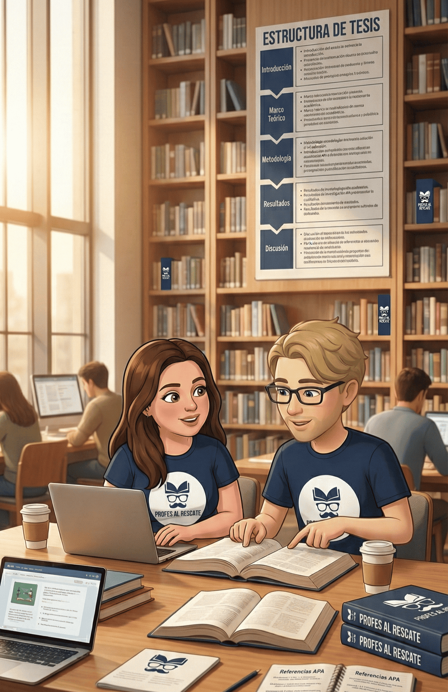

Estás a una consulta de terminar tu tesis.
Corrección, metodología, normas APA y acompañamiento personalizado para estudiantes universitarios y terciarios de Argentina.

A un clic de distancia, con profesores reales que saben lo que los jurados evalúan.
Llevás semanas dando vueltas sin avanzar. Cada vez que abrís el documento, cerrás.
Las citas, las referencias, los márgenes... todo se mezcla y no sabés si lo estás haciendo bien.
El director te marca observaciones pero no sabés cómo resolverlas sin romper todo el trabajo.
La fecha de entrega se acerca y seguís sin entregar. La presión es insoportable.
Escribir es una cosa, pero pararte frente al tribunal y defender tu trabajo es otra historia.
Buscás y buscás pero no sabés qué fuentes usar ni cómo citarlas correctamente.
Revisamos cada coma, cada acento, cada punto. Tu tesis va a quedar impecable antes de llegar al tribunal.
Marco teórico, objetivos, hipótesis, diseño de investigación. Te guiamos para que tu metodología sea sólida y coherente.
Citas, referencias bibliográficas, márgenes, interlineado. Aplicamos los estándares correctamente para que no te devuelvan nada.
Reorganizamos tu trabajo para que haya un hilo conductor lógico entre la introducción y las conclusiones.
Ensayo de presentación, anticipación de preguntas del tribunal, manejo de los nervios. Llegás con confianza.
No somos un servicio de corrección automática. Somos profesores que leen tu trabajo, te escuchan y te orientan.
Nos contás en qué punto de tu tesis estás, qué necesitás y con qué urgencia. Solo te lleva 2 minutos.
Un profe real se comunica con vos para entender tu situación y definir juntos el mejor camino.
Revisión, corrección, orientación. Todo personalizado, sin automatizaciones, sin respuestas genéricas.
Llegás a la entrega o la defensa sabiendo que tu trabajo está bien hecho y listo para brillar.
"Llevaba dos años bloqueada en el capítulo metodológico. En una semana con Profes al Rescate entendí lo que mi director no me había podido explicar en meses."
"La corrección de APA fue un antes y un después. Pensé que iba a tener que rehacer todo, pero me guiaron paso a paso y quedó perfecto."
"Me prepararon para la defensa de una manera que no esperaba. Llegué tranquilo, respondí todo, y aprobé con distinción."
Ofrecemos asesoría educativa integral, corrección de estilo, aplicación de normas APA 7ma edición, redacción académica y tutorías personalizadas para anteproyectos, tesis de grado y trabajos de investigación. Cada servicio es 100% personalizado — sin automatizaciones ni respuestas genéricas.
Nuestros servicios comienzan desde $20.000 pesos argentinos, con precio final según la extensión del trabajo y el tipo de intervención requerida. Trabajamos con presupuestos personalizados para que pagues exactamente por lo que necesitás. Consultanos sin cargo por WhatsApp.
Podemos intervenir en cualquier etapa del proceso. Ofrecemos desde orientación estructural hasta trabajo de re-escritura académica para destrabar proyectos estancados. No importa si llevas meses bloqueado — arrancamos desde donde estás.
El servicio es 100% virtual, lo que permite recibir tutorías personalizadas y seguimiento constante sin moverte de tu casa, adaptándonos a tus tiempos. Atendemos a estudiantes de toda Argentina — Buenos Aires, Córdoba, Rosario, Mendoza, Tucumán y todo el interior del país.
Sí, somos especialistas en la aplicación de normas APA 7ma edición y el manejo correcto de citas bibliográficas para asegurar que tu trabajo cumpla con los estándares de tu institución. También trabajamos con otras normas académicas según lo requiera tu carrera.
Aunque brindamos apoyo para cualquier carrera, nuestra mayor especialización se encuentra en las Ciencias Sociales y la Educación. También trabajamos frecuentemente con Derecho, Psicología, Administración, Comunicación y todas las humanidades.
Ofrecemos flexibilidad según tu necesidad: desde una supervisión externa hasta una co-creación y seguimiento profundo del desarrollo de la tesis. Cada proyecto se trabaja de forma personalizada para respetar tu voz académica y los requisitos de tu institución.
La duración depende de la complejidad del trabajo y el nivel de avance. En general, una corrección completa toma entre 5 y 10 días hábiles. Si tenés una fecha de entrega urgente, consultanos — tenemos modalidad express disponible.
Sí. Preparamos a nuestros alumnos para la defensa oral con ensayos de presentación, anticipación de preguntas del tribunal y trabajo sobre el manejo de los nervios. Muchos estudiantes llegaron confiados y aprobaron con distinción gracias a esta preparación.
Porque combinamos 30 años de experiencia real en el ámbito educativo con un enfoque humano y personalizado, transformando un proceso estresante en una experiencia de aprendizaje enriquecedora. No somos una plataforma automática — somos profesores reales que leen tu trabajo, te escuchan y te acompañan hasta que aprobés.
Completá el formulario y un profe real te va a contactar en menos de 24 horas. Sin costos ocultos, sin automatizaciones.
¿Preferís el contacto directo?
Escribinos por WhatsApp